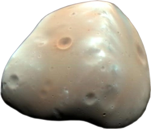
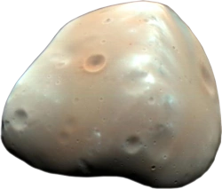

I'm Eric.
a developer-in-training.

a developer-in-training.
I'm an automation testing analyst in the process of learning fullstack web app development. I'm the founder and CEO of ManifestMars and Jinx Gaming Cafe.
For 2 years, I worked for Cognizant Technology Solutions and Infosys as a Quality Analyst and Engineer. I wrote scripts to automate functional testing for web and mobile apps.
When I was 20 years old I knew I wanted to learn coding so I could eventually develop my own web apps, and eventually convert them to mobile Apps via an Ionic Shell. I figured teaching myself would be a good experiment, which only got me so far; that's when I invested in a Web App FullStack Development Course from Udemy, by Angela Yu. This was the second project from her course.

I started cooking when I was 10 years old because I had spent a lot of time with my Grandmother, Grams, when I was young and she often had the food network on. Since then, my adventurous palate has taken me around the world, inlcuding Mysore, India and Seoul, South Korea.
We can talk about development, the busted ranked meta in League of Legends, favorite foods, and more!